Four open-source projects, and the products behind private repositories. Dört açık kaynak proje, ve özel depolardaki ürünler.
The code and the numbers of the four open projects are public. Scroll to move between them, or use the dots. Dört açık projenin kodu da sayıları da herkese açık. Aralarında gezmek için kaydır, ya da noktaları kullan.
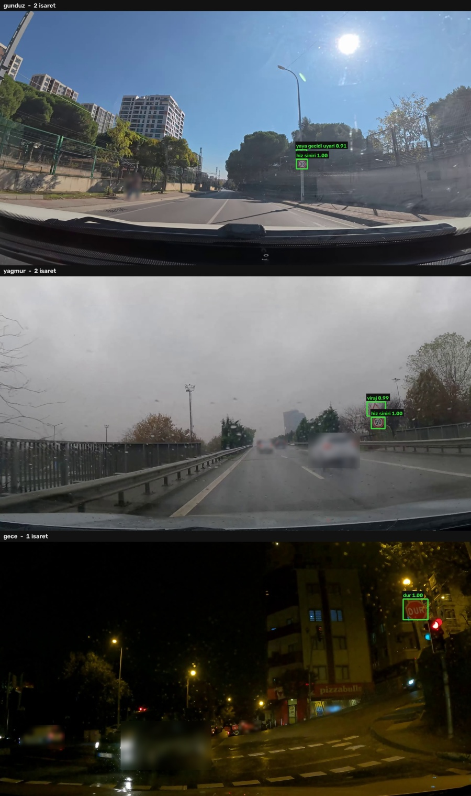
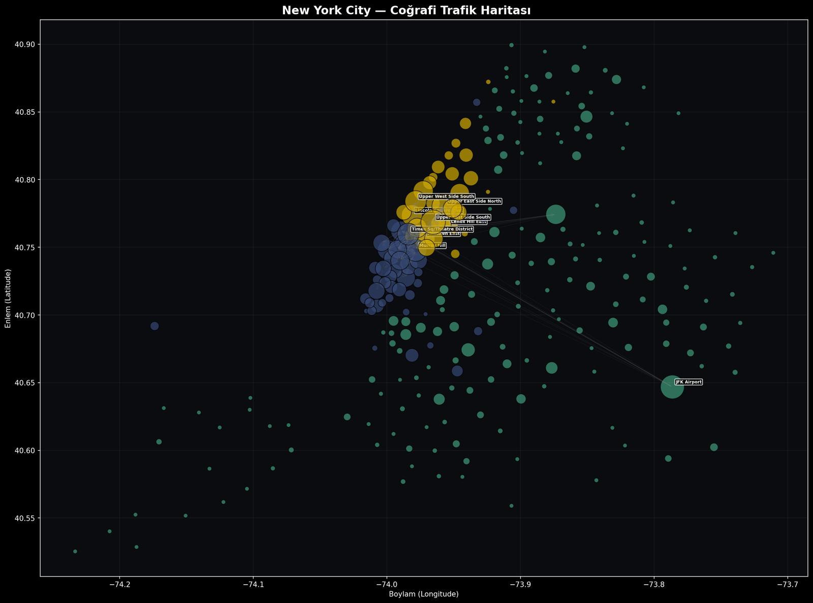
otonomarac
A perception pipeline that takes a single forward-facing camera and answers: what is in the scene, how it moves between frames, how far away it is, where the drivable area is, and whether a collision is close. The output is a two-panel video — the annotated camera view on the left, a live bird's-eye map on the right. Built over eight weeks and deployed as a public demo. Tek bir ileri bakan kameradan alıp şunu cevaplayan bir algı pipeline'ı: sahnede ne var, kareler arasında nasıl hareket ediyor, ne kadar uzakta, sürülebilir alan nerede ve çarpışma yakın mı. Çıktı iki panelli bir video — solda işaretlenmiş kamera görüntüsü, sağda canlı kuşbakışı harita. Sekiz haftada yapıldı ve herkese açık demo olarak yayına alındı.
trafikisaret
A Turkish traffic-sign dataset labelled from scratch on my own dashcam footage, and a two-stage recogniser trained on it. Stage one finds the boxes without caring about the class; stage two classifies each crop, and says "?" when it is not sure. The split exists because of the data: 717 boxes spread over 23 labels is too thin for one detector, but merged into a single class all 717 feed it. Kendi dashcam kayıtlarımdan sıfırdan etiketlenmiş bir Türk trafik işareti veri seti ve üzerinde eğitilmiş iki aşamalı bir tanıyıcı. Birinci aşama sınıfa bakmadan kutuları buluyor; ikinci aşama her kırpmayı sınıflandırıyor, emin olamadığında "?" diyor. Bölünmenin sebebi veri: 717 kutu 23 etikete dağılınca tek dedektör için fazla ince kalıyor, tek sınıfta toplanınca 717'sinin hepsi dedektörü besliyor.
smart-city-traffic-analysis
38.3 million New York taxi trips modelled as a single graph to find where the city's traffic actually bottlenecks. PageRank ranks the critical zones, Louvain finds the communities, and a node-removal simulation measures what breaks when they close. Removing the top five zones costs 34.1% of the flow; removing JFK Airport splits the network from one component into sixteen. 38,3 milyon New York taksi yolculuğu tek bir graph olarak modellenip şehrin trafiğinin gerçekte nerede tıkandığı bulunuyor. PageRank kritik bölgeleri sıralıyor, Louvain toplulukları çıkarıyor, düğüm silme simülasyonu da bunlar kapandığında neyin bozulduğunu ölçüyor. En kritik beş bölgeyi silmek akışın %34,1'ine mal oluyor; JFK Havalimanı çıkarılınca ağ tek bileşenden on altıya bölünüyor.
plakatanima
Turkish licence plate recognition: a synthetic data generator and a CTC sequence recogniser. The generator is calibrated against 690 real plates I labelled by hand — the plan assumed ±35° of horizontal angle, the measurement said about 7°, so the plan changed. Phase 0 and the phase 2 skeleton are done; the model has not been trained yet, and the page says so instead of showing a number. Türk plakası tanıma: sentetik veri üreteci ve CTC dizi tanıyıcısı. Üreteç, elle etiketlediğim 690 gerçek plakaya göre kalibre edildi — plan ±35° yatay açı varsayıyordu, ölçüm yaklaşık 7° dedi, plan değişti. Faz 0 ve Faz 2'nin iskeleti hazır; model henüz eğitilmedi ve bu sayfa bir sayı uydurmak yerine bunu yazıyor.
What the pipelines actually output Pipeline'ların gerçekte ne ürettiği
Real output from the runs, not mock-ups. Click any figure to open it full size. Licence plates in the dashcam frames are pixelated before publishing. Gerçek koşu çıktıları, temsilî görsel değil. Herhangi bir figüre tıklayınca tam boyutta açılır. Dashcam karelerindeki plakalar yayımlamadan önce pikselleştirildi.
otonomarac
DETECTION • DEPTH • SEGMENTATION • BEV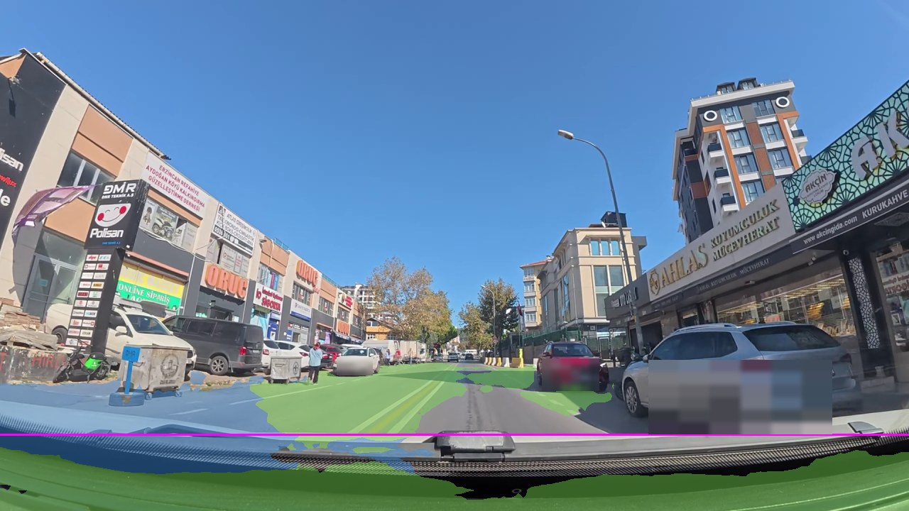
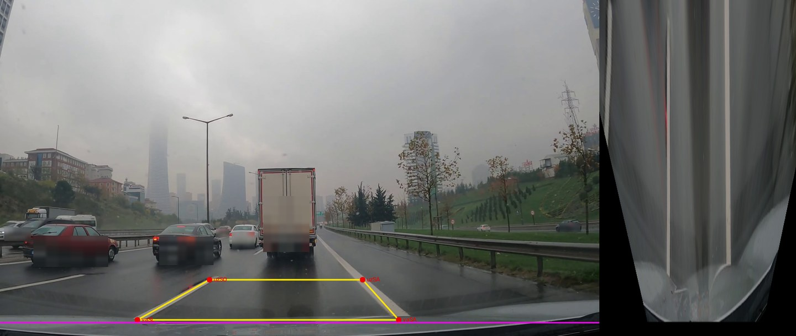
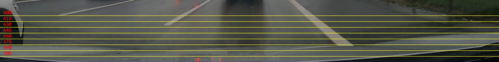
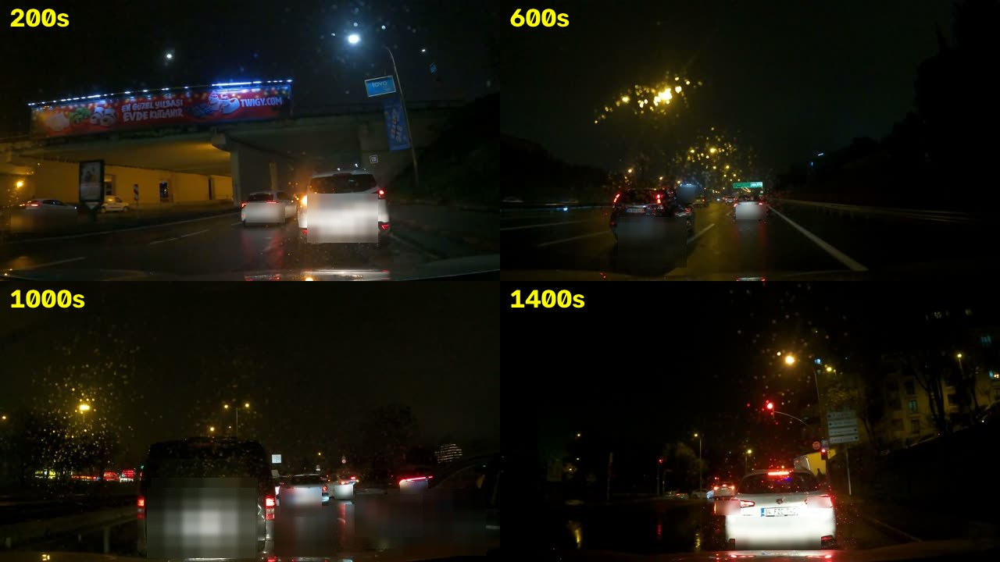
trafikisaret
TWO-STAGE • TRAINED FROM SCRATCH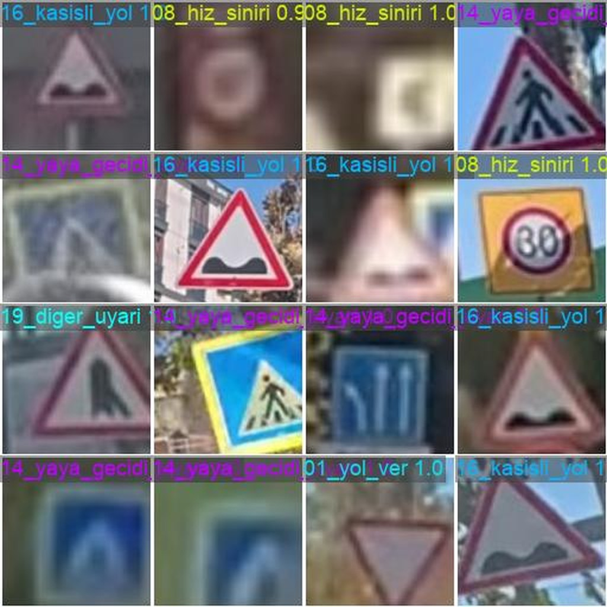
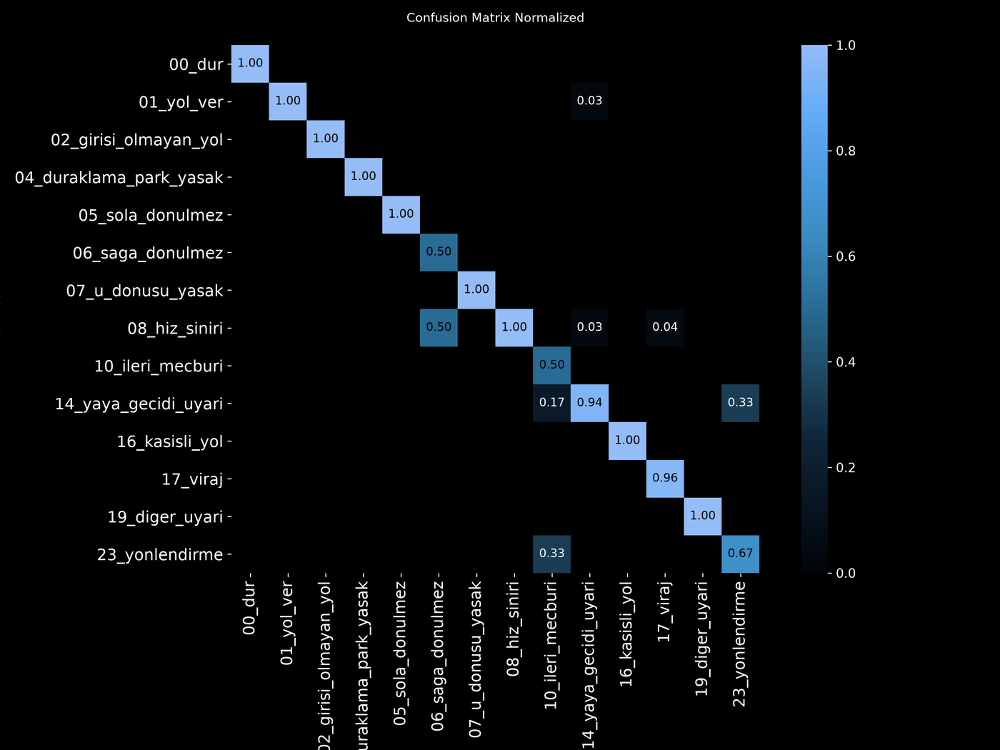
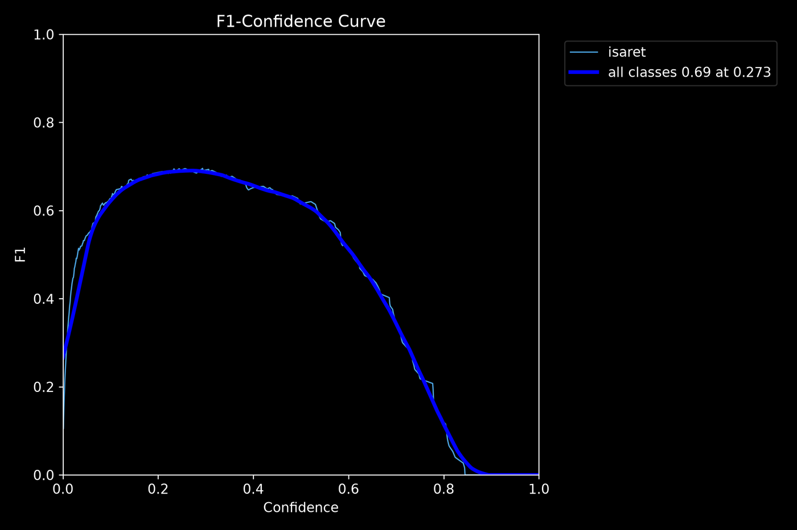
mAP50 is 0.515 across the test set, and the single number hides two different realities. Test kümesinde mAP50 0,515 ve bu tek sayı iki farklı gerçeği gizliyor.
Inference resolution mattered more than training did: running the 640-trained model at 960 px raised recall from 0.379 to 0.724 without retraining anything. At 1280 px it falls back to 0.448 — there is an optimum, and it does not show up without measuring. Çıkarım çözünürlüğü eğitimden daha çok fark yarattı: 640'ta eğitilmiş modeli 960 pikselde çalıştırmak, hiçbir şey eğitmeden duyarlığı 0,379'dan 0,724'e çıkardı. 1280 pikselde 0,448'e düşüyor — bir optimum var ve ölçmeden ortaya çıkmıyor.
smart-city-traffic-analysis
NYC TLC 2023 • 38,310,226 TRIPS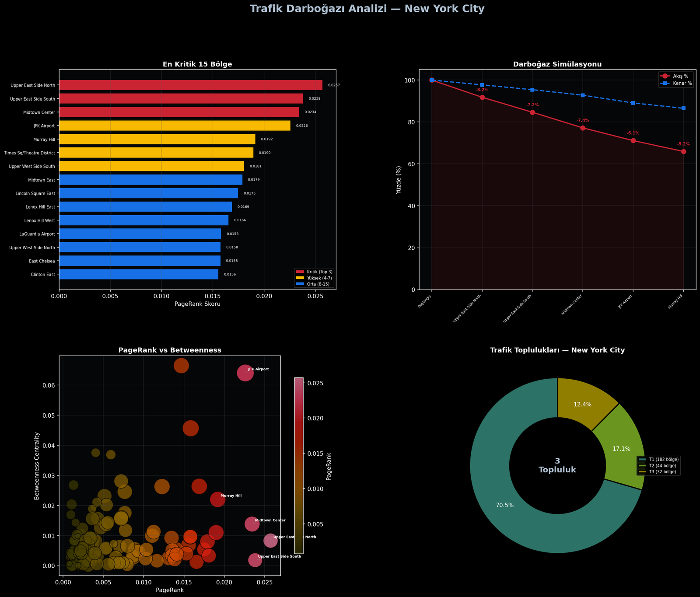
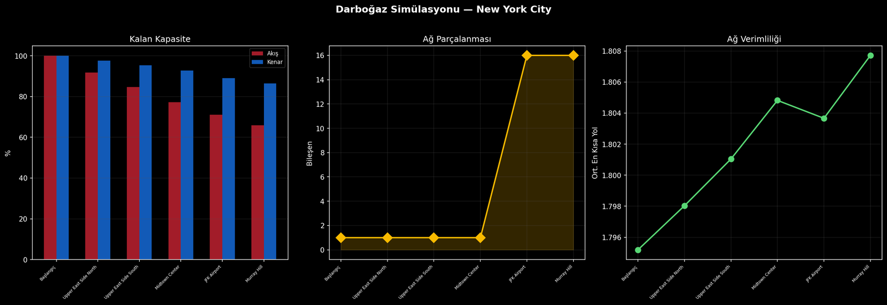
Products, not demos Demo değil, ürün
These are shipped or shipping products with their own domains and store listings. The code stays closed; the architecture I am happy to walk through. Bunlar kendi alan adı ve mağaza kaydı olan, yayına çıkmış ya da çıkmakta olan ürünler. Kod kapalı; mimarisini anlatmaktan memnuniyet duyarım.
An exam-preparation ecosystem that turns a question bank into short vertical videos with AI. It is one shared architecture — a .NET backend on a Clean Architecture split, a React Native client, and a Python video engine — but three separate apps, one per exam, each with its own question bank, store listing and release track. Bir soru bankasını yapay zekâ ile kısa dikey videolara çeviren bir sınav hazırlık ekosistemi. Tek bir ortak mimari — Clean Architecture ayrımıyla .NET backend, React Native istemci ve Python video motoru — ama üç ayrı uygulama; her sınav için biri, kendi soru bankası, mağaza kaydı ve sürüm hattıyla.
YKS Shorties
LIVEUniversity entrance exam (TYT/AYT). The first app of the three and the one the architecture was proven on — currently at version 2, on both stores. Üniversite giriş sınavı (TYT/AYT). Üçünün ilki ve mimarinin üzerinde kanıtlandığı uygulama — şu anda sürüm 2, her iki mağazada da yayında.
KPSS Shorties
IN DEVELOPMENTCivil service exam. Backend, mobile client and video engine are in place on the shared architecture; the app is not on the stores yet. Kamu personeli seçme sınavı. Backend, mobil istemci ve video motoru ortak mimari üzerinde hazır; uygulama henüz mağazalarda değil.
ALES Shorties
IN DEVELOPMENTGraduate entrance exam. The third app on the same architecture, with its own web front and question bank in progress. Akademik personel ve lisansüstü eğitim giriş sınavı. Aynı mimari üzerindeki üçüncü uygulama; kendi web yüzü ve soru bankası hazırlanıyor.
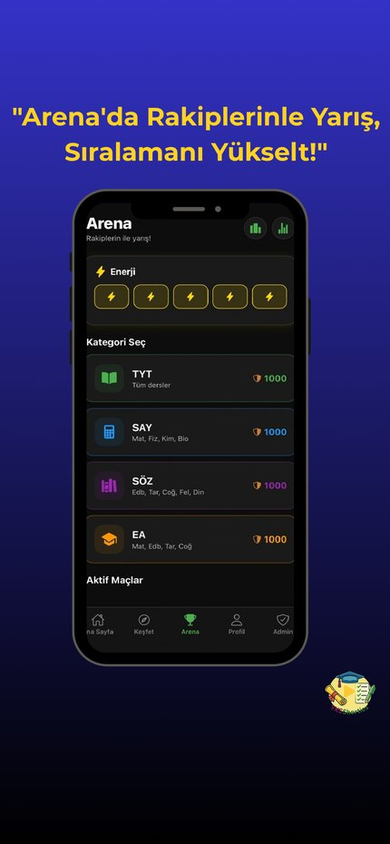
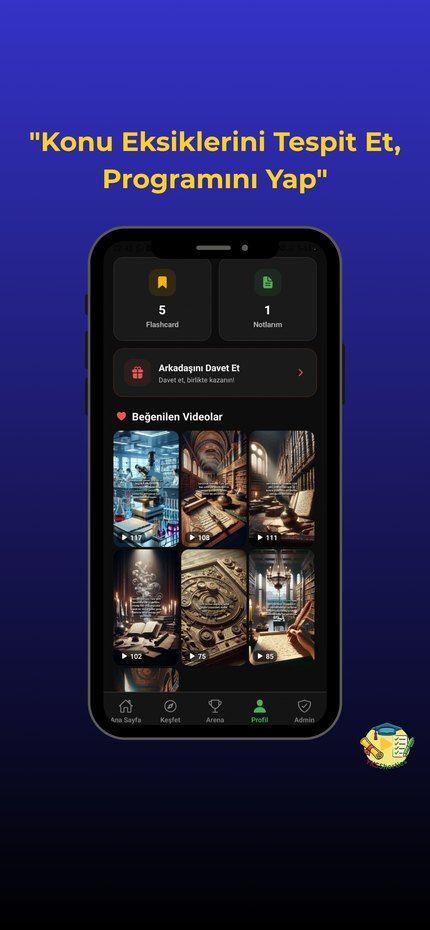
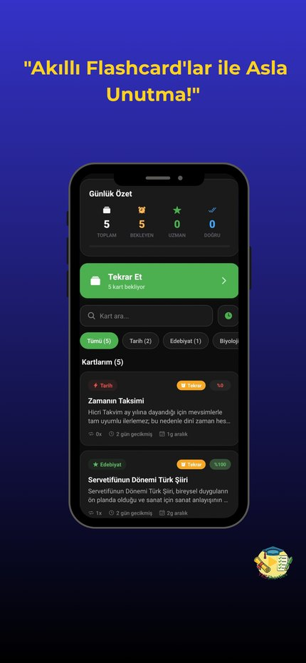
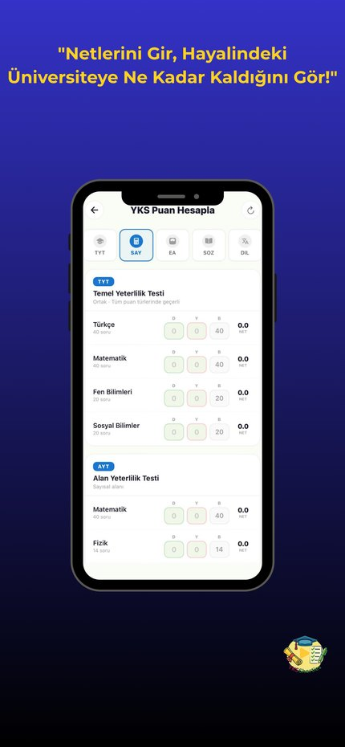
A multi-tenant SaaS point-of-sale system for restaurants. One backend serves many restaurants, each with isolated data and self-service sign-up, and module access is granted per restaurant so two tenants on the same deployment can see different features. It runs in the browser on tablets, phones and POS terminals: live table view, kitchen display, recipe-based stock tracking, shift and cash management, and discount authorisation with an audit log. Restoranlar için multi-tenant SaaS satış noktası sistemi. Tek backend birçok restorana hizmet veriyor; her biri kendi izole verisiyle ve kendi kaydını açarak. Modül erişimi restoran bazında verildiği için aynı kurulumdaki iki tenant farklı özellikler görebiliyor. Tarayıcı üzerinden tablet, telefon ve POS terminalinde çalışıyor: canlı masa görünümü, mutfak ekranı, reçete bazlı stok takibi, vardiya ve kasa yönetimi, denetim kayıtlı indirim yetkilendirme.
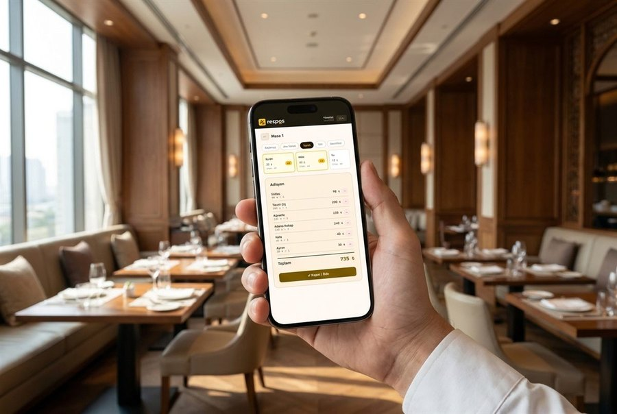
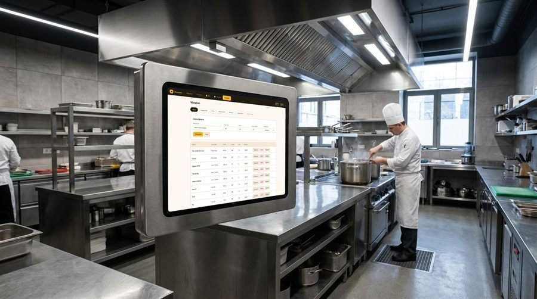
Product imagery from resposapp.com — the device screens are the real interface, the surroundings are marketing photography. Görseller resposapp.com'dan — cihaz ekranları gerçek arayüz, çevresi tanıtım fotoğrafı.
Mobile Fitness Tracker
A cross-platform fitness tracking app that builds personalised meal and workout recommendations with AI. Secure authentication, workout logging, and data analytics, designed and shipped as a team. Yapay zekâ ile kişiselleştirilmiş beslenme ve antrenman önerileri üreten çapraz platform bir fitness takip uygulaması. Güvenli kimlik doğrulama, antrenman kaydı ve veri analitiği; ekip olarak tasarlanıp yayına alındı.
Four rules these projects taught me Bu projelerin bana öğrettiği dört kural
Measure before you build Kurmadan önce ölç
In plakatanima the plan assumed ±35° of horizontal angle. I labelled 690 real plates and measured about 7°, so I changed the generator instead of the measurement. plakatanima'da plan ±35° yatay açı varsayıyordu. 690 gerçek plaka etiketleyip yaklaşık 7° ölçtüm ve ölçümü değil üreteci değiştirdim.
Check the number that flatters you Hoşuna giden sayıyı kontrol et
I concluded that sharpness does not predict readability at night. It does, from 1% to 62%. My first sample only covered the flat end of the range. Gecede keskinliğin okunabilirliği öngörmediği sonucuna varmıştım. Öngörüyor, %1'den %62'ye. İlk örneklemim aralığın sadece düz ucunu kapsıyordu.
Publish what fails too Bozulanı da yayımla
Every repository has a section on where it breaks. The trafikisaret demo keeps a night frame with only one sign found, because that is how the model performs there. Her reponun nerede kırıldığını anlatan bir bölümü var. trafikisaret demosunda tek işaretin bulunduğu gece karesi duruyor, çünkü model orada böyle çalışıyor.
Write down what you could not do Yapamadığını da yaz
The plakatanima plan needed a Jetson board I do not have, so the edge-latency phase is marked out of scope rather than estimated. plakatanima planı bende olmayan bir Jetson kartı gerektiriyordu; uç cihaz gecikme fazı tahmin edilmek yerine kapsam dışı işaretlendi.
How these systems are put together Bu sistemler nasıl kuruluyor
The pipelines, the layers they are made of, and the choices behind them. Pipeline'lar, hangi katmanlardan oluştukları ve arkalarındaki tercihler.